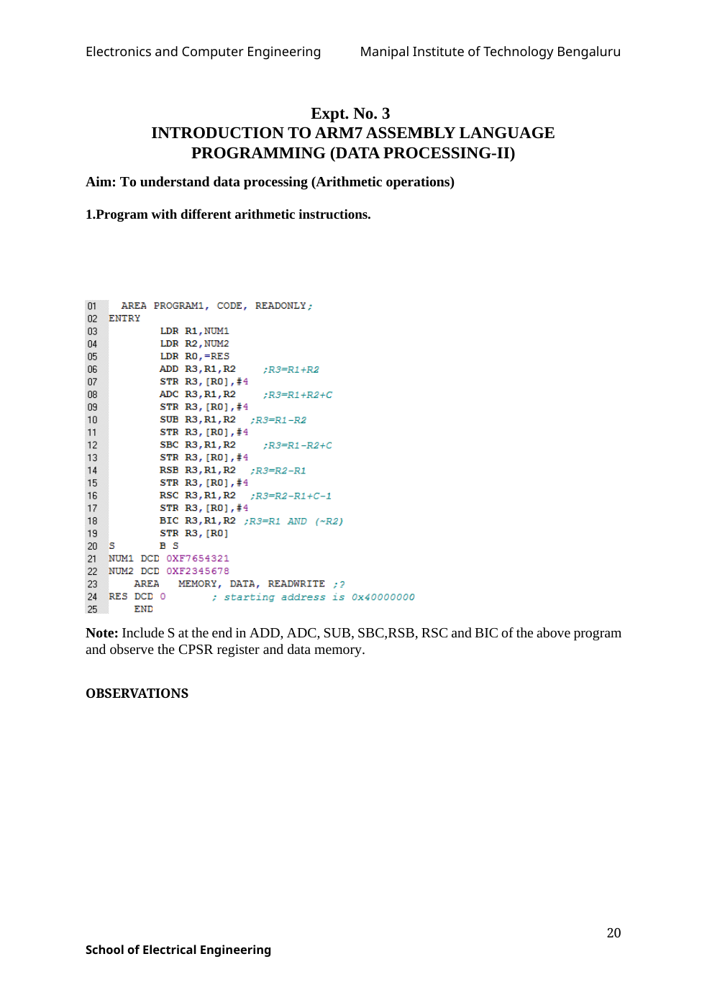

;/* PROGRAM TO ADD two 16-BIT NUMBERS & STORE IN INTERNAL RAM */
;/* THE RESULT CAN BE VIEWED IN LOCATION 0X40000000 & ALSO IN R0 */
AREA ADDITION , CODE, READONLY
ENTRY ;Mark first instruction to execute
START
MOV R0,#0 ; INTIALISE SUM TO ZERO
LDR R1, VALUE1 ; LOADS THE FIRST VALUE
LDR R3,MASK ; MASK TO GET 16 BIT
AND R1,R1,R3 ; MASK MSB
ADD R0,R0,R1 ; ADD THE ELEMENTS
LDR R2, VALUE2
AND R2,R2,R3
ADD R0,R0,R2
LDR R4,=RESULT ; LOADS THE ADDRESS OF RESULT
STR R0,[R4] ; STORES THE RESULT IN R1
here b here
MASK DCD 0X0000FFFF ; MASK MSB
VALUE1 DCW 0XAAAA
ALIGN
VALUE2 DCW 0X2222
AREA DATA2,DATA,READWRITE ; TO STORE RESULT IN GIVEN ADDRESS
RESULT DCD 0X0, 0x0
END ; Mark end of fileOriginal manual image(s)
